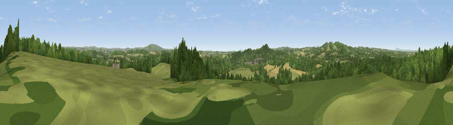

Viewpoint near Stourton
#22307 in England · top 38% of its area beats it · near StourtonWhere it is
The exact computed spot (SO 84925 85625). Click the marker for map links.
The view, rendered

A 360° render of this exact spot computed from the terrain model, tree cover and land cover — summer colours, afternoon light, calibrated against photographs of famous viewpoints. Real trees, hedges and buildings will differ in detail.
The panorama
Grey silhouette: terrain skyline in each direction (720 bearings, Earth curvature and refraction included). Dashed green: skyline with trees (+15 m) and buildings (+8 m) as obstacles. Blue strip: how far the ground is visible on each bearing.
Where the view opens
Wedge length = distance to the farthest visible ground on that bearing (vegetation-aware). Rings at 10, 25 and 50 km.
What fills the view
55% woodland · 35% grassland · 8% cropland · 2% built-up
Angular shares of the visible panorama (visual magnitude), not map area. Landscape diversity 0.42 (0–1 Shannon).
Key numbers
More beautiful places nearby
The staircase of upgrades: each row has a higher view potential than everything closer. Driving times are estimates from straight-line distance, calibrated against real road routing — check an actual route before setting out.
| Place | Direction | Drive | Score |
|---|---|---|---|
| Kinver Edge | SSW · 3 km | ~7 min | 60.5 |
| Viewpoint near Enville | W · 3 km | ~8 min | 68.7 |
| Viewpoint near Enville | W · 4 km | ~9 min | 73.1 |
| Viewpoint near Clent | ESE · 10 km | ~19 min | 74.3 |
| Knowle Hill | WSW · 16 km | ~28 min | 75.5 |
| Viewpoint near Abberley | SSW · 20 km | ~34 min | 77.5 |
| Abberley Hill | SSW · 21 km | ~35 min | 80.4 |
| Woodbury Hill | SSW · 23 km | ~39 min | 81.6 |
52.46835, -2.22334 · source: screening · position refined by local search. Computed location — check access rights before visiting.